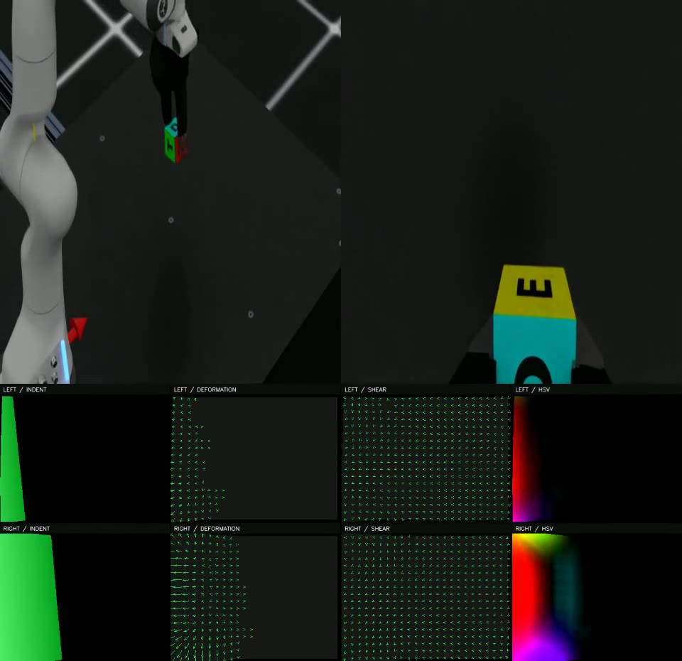

开局与动作来源
固定任务、输入与版本
区分示范 / 教师 / 模型
TACTILE ROLLOUTS · LAB MEETING
采集链已获得成功样例。
接下来，要证明模型真的能学会。
2026 年 10 月 5 日 · 五个选定案例，不代表总体成功率

THE CONTRACT
“任务成功”是必要证据之一，不能替代触觉质量与训练有效性。
固定任务、输入与版本
区分示范 / 教师 / 模型
TacClaw 接触真实发生
无接触归零，排查饱和
RGB / 触觉 / state / action
视频、终止帧、来源哈希
正确的因果配对
在未见开局中闭环执行
三个动作来源
示范回放：把已有动作重定向到 TacClaw，主要验证执行与采集。
几何教师：依据当前物体、末端和接触反馈决定动作，生成成功示范。
BC 学生：从示范学习“观测 → 动作”，必须另测闭环效果。
当前 P0 范围
ViTaForge：UniVTAC 来源的视觉—触觉示范；本例将侧躺罐子转成立姿。
Arena：Franka 操作任务；本轮保留 lift_object。RoboSyn 的引擎与触觉适配仍待验证。
Door 是保留的历史诊断；以下五次运行均不是 GPT rollout。
01 · VITAFORGE / RECORDED ACTION REPLAY
完成动作重定向与触觉修复，罐子从侧躺转成立姿。
原始触觉深度被底座遮挡，隐藏几何后图像又未及时更新。修复渲染流程后，保留原物理轨迹并得到有效接触图。
已有成功动作可以在 TacClaw 上执行，并产出可进入训练检查的数据。
物理接触左 136 / 右 139 帧；左侧 6 帧接触无有效触觉仍需关注。尚不证明传感器全面标定或策略泛化。
02 · VITAFORGE / BC RESIDUAL POLICY
同一任务，改由小模型根据实际观测产生下一动作。
单示范拟合没有教会模型恢复偏离。第 20 帧动作与示范已差 0.314 rad，第 50 帧差 2.713 rad；实际状态变化又改变下一次输入。
训练误差小 ≠ 闭环成功。必须将学生模型重新放回物理环境检验。
触觉审计通过仅证明记录门禁；该失败轨迹不作为当前正样本 BC 的成功示范。
03 · VITAFORGE / BC ABSOLUTE TARGET
改为预测绝对关节目标，并将输出限制在训练示范的动作范围。
离线拟合误差更低，整段最大目标偏离由 3.689 降至 0.206 rad。但机器人仍未完成操作，右侧未出现接触。
动作“没那么乱”不是验收终点；任务成功和有效触觉仍要独立检查。
动作表示、范围约束与训练日程同时变化，不能归因于单一改动；仍需核查初始观测差异和动作速率。
SIDE-BY-SIDE / SAME TASK, DIFFERENT CONTROLLERS
按记录帧对齐观看；三个视频均为 170 帧 / 60 Hz，物理状态不保证相同。
单位 rad · 每帧取七个手臂关节的最大绝对差；来自原始 trajectory.json，非训练损失。
04 · ARENA LIFT / GEOMETRY FEEDBACK TEACHER
依靠实时末端、物体位置和接触反馈，完成原生 lift_object 判定。
对齐真实 TCP → 明确力矩驱动语义 → 降低过强夹持力 → 闭合保持、先竖直抬升再搬运。
保留原任务条件，也能通过反馈教师采到成功、双侧触觉有效的轨迹。
后续 206 对样本训练检查通过，但学生策略尚未原生验收。成功属于教师；夹持力未完成硬件标定。
05 · ARENA DOOR / SOURCE-SCAFFOLD FEEDBACK
从示范恢复一次开局，沿末端目标反馈执行；没有逐帧强制物体位姿。
初始状态与四元数转换、TacClaw 开合适配、末端反馈、厨房可见视角和真实双侧接触都已进入原生执行。
复杂任务的脚手架与部分接触证据；停止原因是第三来源改为 RoboSyn。
本次没有完整触觉/任务验收。物体位姿、门关节和阶段标志的逐帧独立记录尚不完整，不能补造到旧帧。
EVIDENCE, NOT JUST VIDEO
任务成功、触觉合格和动作来源可信，需要分别判断。
原生接触与逐帧数据链；两条成功示范；模型训练/重载检查；失败视频与决策留证。
这些案例都没有声明完整 P0 完成，也没有证明学生泛化或触觉带来的性能收益。
130903 的旧 input 仍指向参考权重，实际为几何教师；131910 的旧 policy_mode 仍写 zero_action_smoke，实际为示范脚手架反馈。
本网页结合源码留证、轨迹与停止收据解释冲突，原报告在项目内原样保留，本站仅提供公开摘要。
NEXT EXPERIMENTS
继续小规模、有对照的 rollout；并行设计独立训练评估。
检查接触位置、形变随力变化、释放归零；验证动作速率和初始观测对齐。
交付证据：固定接触对照 + 参数记录冻结配置，扰动物体位置与姿态；统计全部尝试，而非只展示成功视频。
交付证据：成功率 + 数据合格率按 episode / 开局划分训练与测试；比较有触觉和无触觉，检验实际收益。
交付证据：未见开局闭环结果需要组内确认
是否必须 GPT？是否接受几何教师？本轮交付到“可训练数据”，还是必须包含学生成绩？
外部依赖
DexSim 固定依赖仍受阻；已有 Isaac 物理迁移路径待验证。原引擎运行与任务迁移应分别标注。